Representar uma imagem com menos números
Problema. Uma foto é uma tabela de números. Eu queria saber se dava para usar menos números e ainda montar uma imagem parecida.
Método. Usei a SVD, um cálculo que separa essa tabela em peças. Das 296 peças, escolhi as 35 de maior peso e as somei para reconstruir a foto.
Resultados. A foto continuou parecida usando 22,3% da quantidade original de números para guardar as peças. Elas preservaram 99,8% da energia, uma medida matemática que não equivale à porcentagem de detalhes visíveis.
Pergunta em aberto. Funcionou nesta foto. Será que a SVD também ajuda a entender o que muda nos pesos de um modelo quando ele aprende uma nova tarefa?
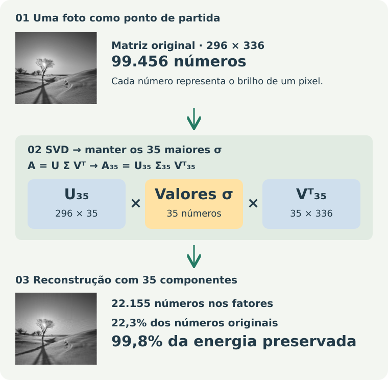
Escolher o modelo para estudar
Problema. Depois de testar a SVD numa foto, eu precisava escolher um modelo para estudar seus pesos: os números que mudam durante o treino.
Método. Li três artigos para entender o caminho até o modelo: o Transformer relaciona partes da entrada; o ViT aplica essa ideia a pedaços de uma foto; o DINOv2 aprende padrões visuais com muitas imagens.
Resultados. Escolhi o DINOv2-Small, com cerca de 22 milhões de pesos, adequado à placa de vídeo de 12 GB disponível. Ele já vem treinado e permite adicionar uma cabeça, a parte que aprende a dar a resposta da nova tarefa. Nesta sessão, fiz a escolha; ainda não treinei o modelo.
Pergunta em aberto. Onde ficam esses pesos dentro do modelo e quais tabelas devo analisar com a SVD?
Encontrar os pesos que vamos estudar
Problema. Eu já tinha escolhido o modelo, mas ainda precisava localizar seus pesos e decidir quais tabelas analisar.
Método. Abri os arquivos do DINOv2-Small, li os tamanhos das tabelas e contei os números de cada uma.
Resultados. Encontrei 72 matrizes em 12 blocos. Cada bloco tem uma parte de atenção e outra chamada MLP: esse é o padrão do Transformer e do ViT, mantido pelo DINOv2. As 72 matrizes guardam cerca de 96% dos 22 milhões de pesos do corpo. Escolhi essas matrizes para acompanhar com a SVD.
Pergunta em aberto. Como uma foto vira os números que chegam a essas matrizes?
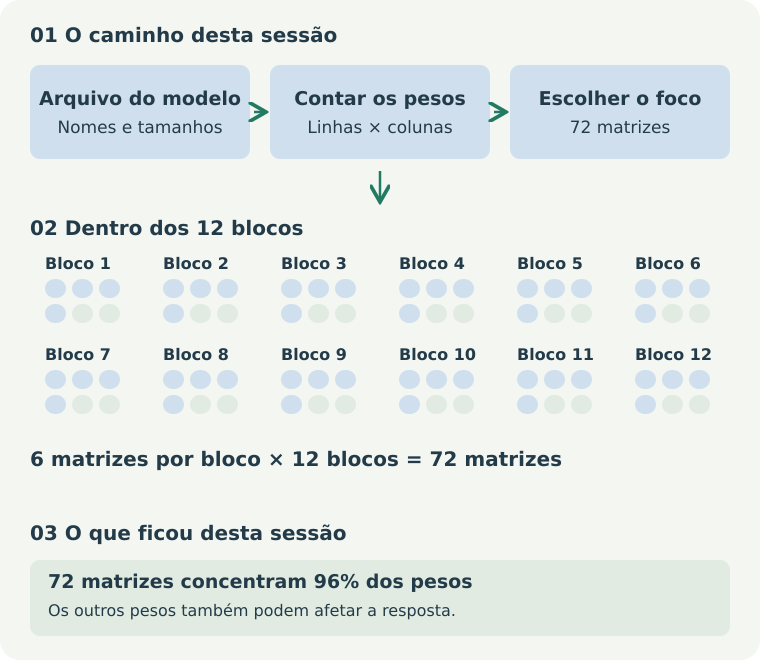
Transformar a foto em listas de números
Problema. As matrizes do modelo trabalham com listas de números. Eu precisava entender como a foto vira essas listas e como o modelo sabe onde cada pedaço estava.
Método. Dividir a foto em pedaços, chamados patches, é a ideia central do ViT, que o DINOv2 também usa. Segui como cada pedaço vira uma lista de números, chamada token. Depois embaralhei os pedaços, com e sem a informação de posição.
Resultados. Uma foto gera 256 tokens de pedaços e um token extra de resumo, todos com 384 números. Sem a posição, embaralhar manteve a direção do resumo; com a posição, ela mudou.
Pergunta em aberto. O que acontece com essas listas dentro de cada bloco do modelo?
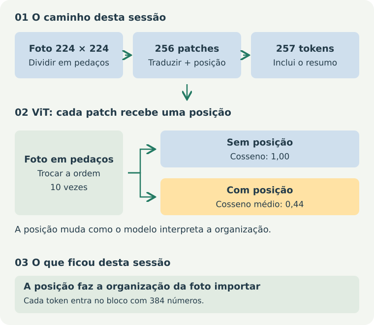
Fazer as partes da foto trocarem informação
Problema. A ideia central do Transformer é usar a atenção para relacionar partes da entrada. No ViT e no DINOv2, essas partes são os patches da foto, já transformados em tokens. Eu queria entender como um token usa informações dos outros.
Método. Fiz um exemplo pequeno, com três tokens. Calculei quanto cada um combina com os demais e usei essas notas para misturar as informações.
Resultados. Cada token recebe uma mistura das contribuições dos tokens, inclusive dele próprio, dando mais peso às que combinam com ele. Essa troca de informação é a atenção do Transformer aplicada aos pedaços da foto. As listas continuam com o mesmo tamanho. Foi uma explicação do cálculo, sem novo treino.
Pergunta em aberto. Para que serve o MLP, a parte que vem depois da atenção?
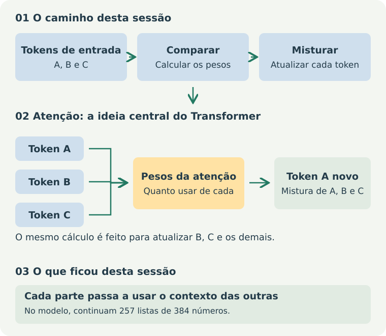
Entender o papel do MLP
Problema. A atenção reúne informações de vários pedaços da foto. Ainda falta tratar essa mistura em cada token antes de enviá-lo ao próximo bloco. Como o modelo faz isso?
Método. Segui um token pelo MLP. A FC1 usa seus 384 números para calcular 1.536 respostas a padrões. A GELU regula cada resposta: deixa passar mais das positivas e enfraquece as negativas. A FC2 combina as 1.536 respostas numa correção de 384 números, que é somada ao token inicial.
Resultados. Assim, o MLP reorganiza as informações reunidas pela atenção para cada token separadamente. A GELU permite que a resposta dependa de quais padrões apareceram. Sem essa função entre elas, FC1 e FC2 fariam o mesmo tipo de conta que uma tabela só.
Pergunta em aberto. Agora que o modelo está entendido, qual tarefa usar para provocar e medir mudanças nos pesos?
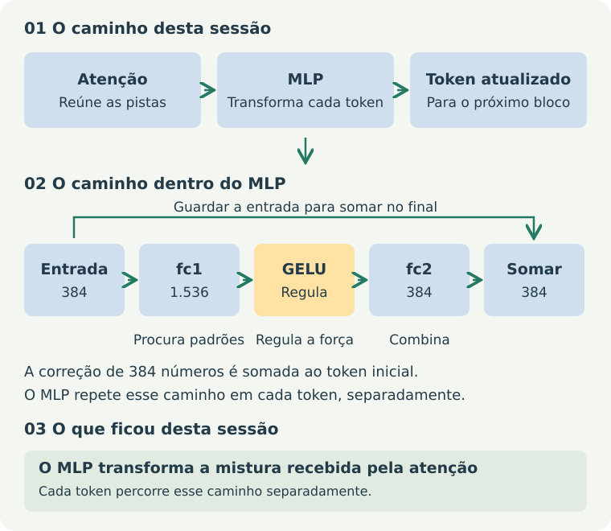
Escolher as fotos para o primeiro teste
Problema. Para observar mudanças nos pesos, eu precisava treinar o modelo numa tarefa com respostas conhecidas.
Método. Escolhi reconhecer raças de cães e gatos no Oxford-IIIT Pet. Conferi as quantidades, os tamanhos das fotos e a separação entre treino e teste.
Resultados. O conjunto tem 37 raças, com 3.680 fotos de treino e 3.669 de teste. As raças têm quantidades próximas de exemplos. As fotos são ajustadas para o tamanho de entrada do modelo.
Pergunta em aberto. Como comparar a resposta prevista com a raça correta faz os pesos mudarem?
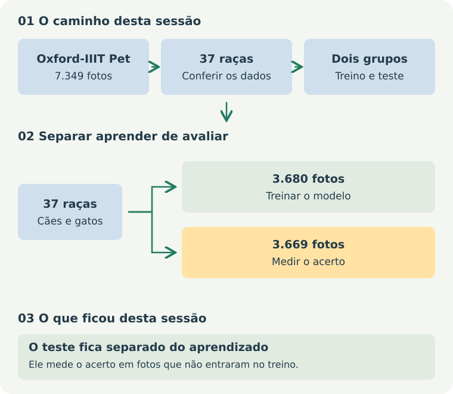
Ensinar apenas a cabeça do modelo
Problema. O corpo já vinha treinado, mas faltava uma cabeça que desse uma nota a cada raça. Eu queria saber quanto ela aprenderia sem mudar o corpo.
Método. Mantive o corpo fixo e treinei uma cabeça linear que dá uma nota a cada uma das 37 raças. Esse tipo de classificador se chama regressão logística multinomial: ele usa o resumo numérico da foto para escolher entre várias classes. Repeti o treino dez vezes.
Resultados. A cabeça chegou a 93,82% de acerto médio. Nenhum peso do corpo mudou. Isso mostrou que o corpo já produzia informações úteis para reconhecer as raças.
Pergunta em aberto. Se eu também liberar o corpo, como o erro chega aos pesos dele?
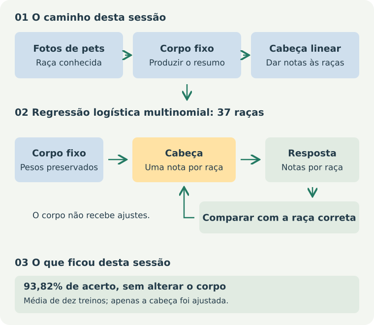
Liberar o corpo para aprender
Problema. Eu precisava entender como o erro da resposta corrige os pesos internos e conferir quando o corpo realmente começa a mudar.
Método. Conferi o cálculo num exemplo pequeno. No modelo real, mantive o corpo parado na primeira passada pelas fotos e o liberei na segunda, acompanhando os primeiros dez passos.
Resultados. Com o corpo parado, nenhum peso dele mudou. Depois da liberação, 222 dos 223 conjuntos de pesos mudaram já no primeiro passo. O protocolo ficou definido: uma passada só com a cabeça e quatro com corpo e cabeça.
Pergunta em aberto. Ao terminar o treino, quanto muda a intensidade σ e quanto mudam as direções da SVD?
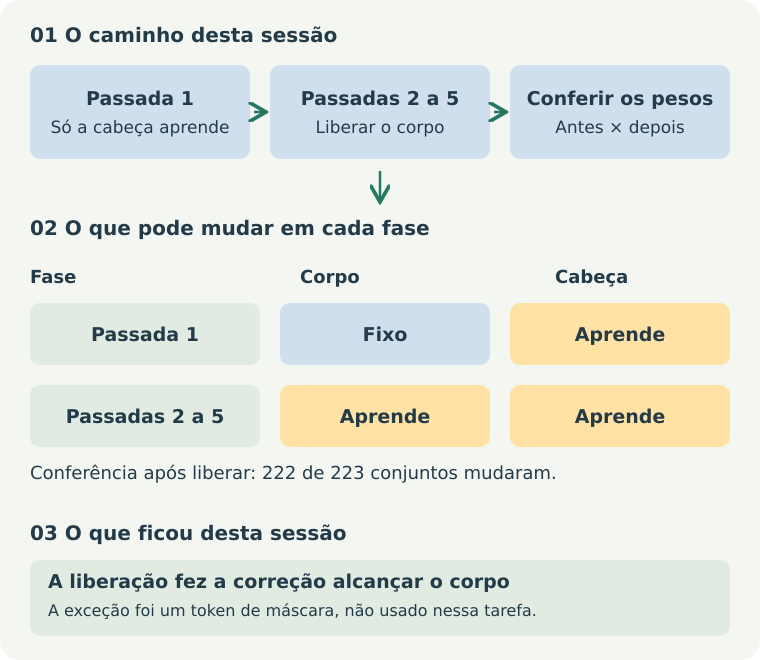
Medir o que mudou depois do treino
Problema. Com o treino definido, eu queria comparar duas mudanças: a intensidade das peças da SVD, chamada σ, e suas direções.
Método. Treinei o modelo em pets dez vezes e comparei as 72 matrizes antes e depois. Também verifiquei se diferentes treinos produziam mudanças parecidas.
Resultados. O acerto médio foi 94,15%, contra 93,82% treinando só a cabeça. A medida inicial sugeriu mudanças maiores nas direções. Parte da redução dos σ parecia vir de uma regra do treino que encolhe os pesos.
Pergunta em aberto. Se eu desligar essa regra de encolhimento, a redução dos σ desaparece?
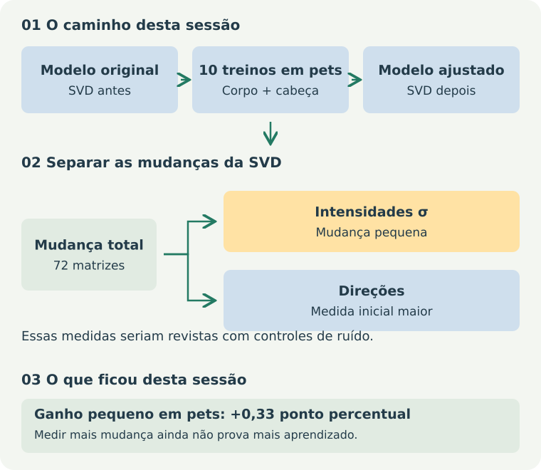
Separar o aprendizado do encolhimento
Problema. Parte da mudança dos σ podia ser causada pela regra que encolhe os pesos, e não pela tarefa de reconhecer raças.
Método. Repeti os dez treinos desligando apenas essa regra. Também avaliei um classificador simples usando o corpo original, sem ajustá-lo.
Resultados. A redução comum dos σ quase desapareceu, mas o acerto ficou em 94,13%. O classificador com o corpo original chegou a 94,79%. Nessa comparação, treinar o corpo não trouxe vantagem.
Pergunta em aberto. Em qual tarefa adaptar o corpo realmente faz diferença?
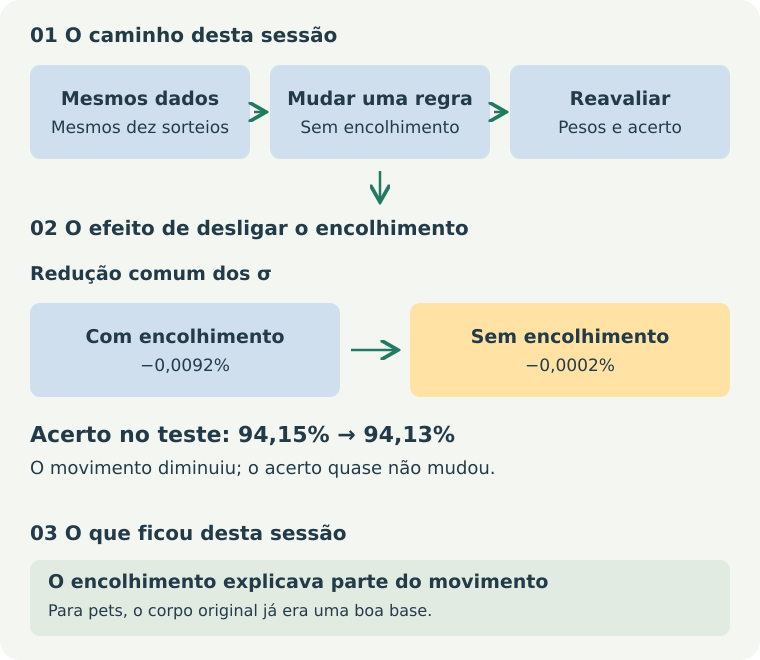
Escolher um caso difícil e conferir as medidas
Problema. Pets exigia pouca adaptação. Além disso, eu precisava saber se a medida que favorecia as direções estava captando aprendizado ou apenas movimento nos pesos.
Método. Primeiro, acrescentei números sorteados aos pesos, sem treinar o modelo, para testar a medida antiga. Depois escolhi lesões de pele e treinei o modelo dez vezes com as respostas certas. No treino controle, usei as mesmas fotos, mas embaralhei as respostas dadas a elas: o modelo ainda treina, porém a resposta de cada foto deixa de corresponder à lesão. Também corrigi a medida das direções e testei se copiar só a mudança dos σ do treino livre preservava o ganho.
Resultados. O treino com respostas certas chegou a 72,84% de acerto; o controle com respostas trocadas ficou em 11,96%, perto do acaso. As mudanças aleatórias eram números sorteados e somados aos pesos originais, sem treino nem uso das fotos, com o mesmo tamanho total da mudança real. Mesmo assim, a medida mostrou as direções mudando muito mais que os σ. Portanto, uma diferença grande nessa medida não prova onde houve aprendizado.
Pergunta em aberto. O que acontece se eu permitir que apenas os σ mudem? E se liberar apenas as direções?
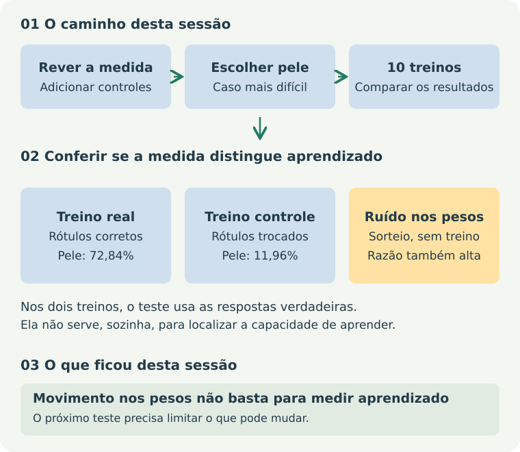
Testar o que cada parte consegue aprender
Problema. O treino livre quase não mudava os σ. Isso não dizia se eles eram pouco úteis ou apenas pouco usados por aquele treino.
Método. Comparei quatro opções nas 72 matrizes: mantê-las fixas, mudar só os σ, girar só as direções ou treinar livremente. A cabeça e os outros pesos continuaram treinando em todas as opções.
Resultados. Com as 72 matrizes fixas, o acerto foi 60,31%. Com treino livre, subiu para 72,84%: ganho de 12,53 pontos. Treinando só os σ dessas matrizes, chegou a 70,30%: ganho de 9,99 pontos, cerca de 80% do ganho do treino livre (9,99 ÷ 12,53). Isso exigiu 27.648 parâmetros treináveis de σ, equivalentes a 0,13% dos pesos guardados nas 72 matrizes. A cabeça e os demais pesos também treinaram. A rotação chegou a 71,26%, mas usava 23 vezes mais parâmetros treináveis nessas matrizes.
Pergunta em aberto. Essa redução de ajustes economiza tempo, memória ou espaço em disco?
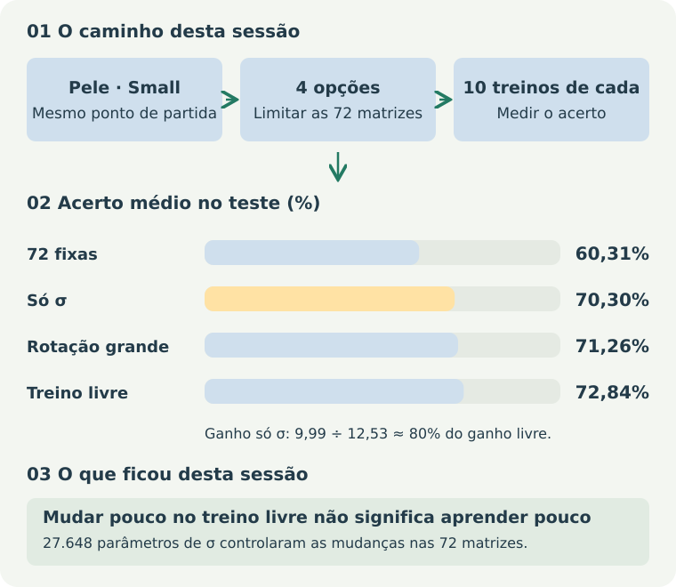
Medir a economia de verdade
Problema. Treinar menos números parecia econômico, mas eu ainda não tinha medido o custo real.
Método. Comparei o tempo por passo, a memória usada no treino e os arquivos salvos. Usei a mesma placa, lotes de 32 fotos e imagens já carregadas na placa.
Resultados. No Small, só σ manteve praticamente o mesmo tempo do treino livre e reduziu o pico de memória em cerca de 8%. O arquivo de mudanças dos σ ficou em 129 KB; para usar a adaptação também são necessários o modelo base, a cabeça e os demais pesos alterados.
Pergunta em aberto. Além de definir as restrições, a SVD do treino livre pode indicar quais σ vale a pena ajustar?
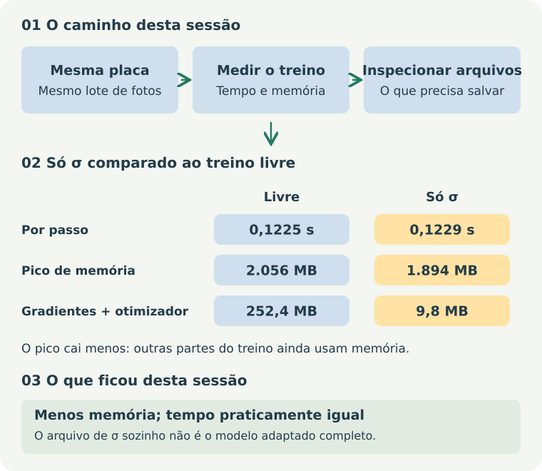
Procurar uma pista no treino livre
Problema. A SVD do treino livre não mostrou a capacidade dos σ. Eu queria saber se ao menos indicava quais deles deveriam aumentar ou diminuir.
Método. Comparei, nas mesmas peças da SVD, as mudanças deixadas pelo treino livre com as mudanças aprendidas no treino só σ. Usei modelos já salvos, sem novos treinos.
Resultados. Para as dez peças maiores de cada matriz, fiz duas listas: quanto o treino livre mudou cada σ e quanto o treino só σ mudou os mesmos valores. Comparei listas de treinos com sorteios diferentes. O cosseno médio foi 0,28, numa escala em que 1 indica o mesmo padrão de aumentos e reduções, e 0 indica ausência de alinhamento. Há uma pista parcial de quais σ mexer, mas ela não diz quanto ajustar nem qual acerto isso produziria.
Pergunta em aberto. Se eu ampliar essa pista e usá-la como ajuste, ela melhora o modelo? Antes, a comparação com rotação continua justa com tantos ajustes a mais?
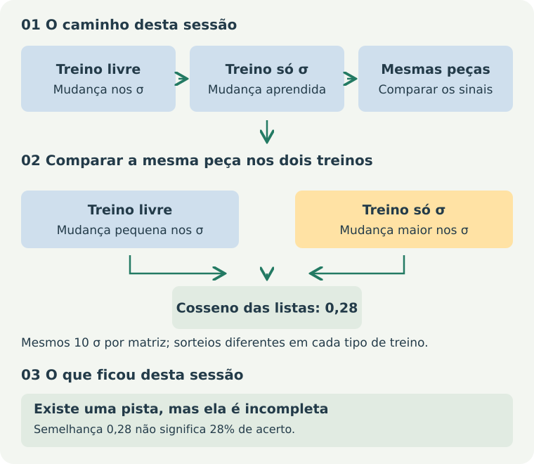
Equilibrar a comparação entre σ e rotação
Problema. A rotação tinha vencido usando 23 vezes mais ajustes. Também faltava testar passos maiores no treino só σ.
Método. Reduzi a rotação para grupos de três linhas e escolhi o passo de cada variante em testes de validação. Repeti os treinos em pele.
Resultados. Com o novo passo, só σ chegou a 71,51%, contra 69,47% da rotação menor. Recuperou 89,4% do ganho das 72 matrizes. A rotação ainda tinha 1,5 vez mais ajustes; a comparação ficou mais próxima, não idêntica.
Pergunta em aberto. A pista deixada pelo treino livre consegue produzir um ajuste útil sem treinar os σ?
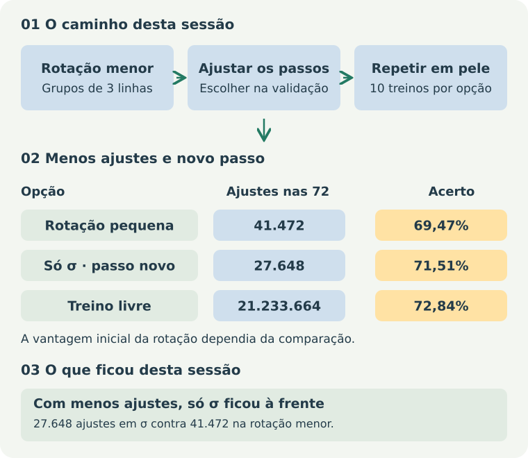
Transformar a pista em um ajuste
Problema. Eu queria saber se as pequenas mudanças dos σ no treino livre poderiam virar uma adaptação útil ao serem ampliadas.
Método. Ampliei essa pista por fatores de 10, 33 e 100, escolhidos por validação, sem treinar os σ. Mantive o restante do corpo original e treinei o mesmo classificador simples em todas as comparações.
Resultados. O fator 100 elevou o acerto de 56,65% para 58,37%. O ajuste aprendido pelo treino só σ chegou a 65,08% nesse mesmo teste. A pista recuperou 20,4% desse ganho; ajudou, mas ficou longe do ajuste aprendido.
Pergunta em aberto. O bom resultado de treinar só σ também aparece em outro tipo de imagem?
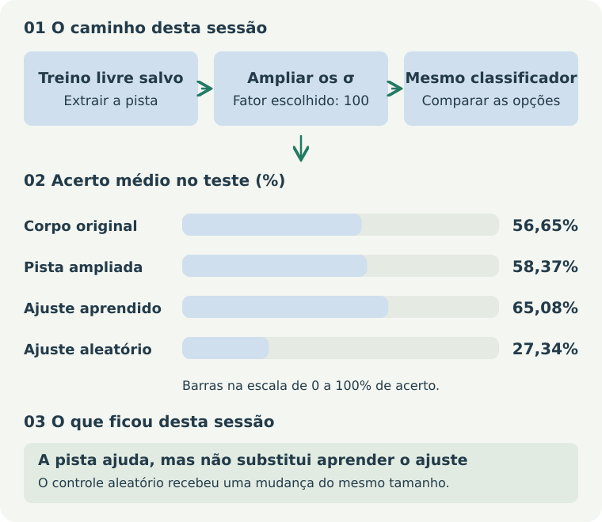
Repetir o teste com letras japonesas
Problema. Até aqui, a vantagem de só σ havia sido testada em pele. Eu precisava saber se ela aparecia em uma tarefa diferente.
Método. Usei o KMNIST, com dez tipos de caracteres japoneses escritos à mão. Repeti as quatro variantes no Small, com dez treinos por variante e escolha dos passos por validação.
Resultados. Só σ chegou a 84,86%, acima dos 83,52% da rotação nos dez treinos. O treino livre chegou a 87,66%. Só σ recuperou 84,2% do ganho das 72 matrizes nesse segundo domínio.
Pergunta em aberto. O resultado também se mantém quando o modelo é maior?
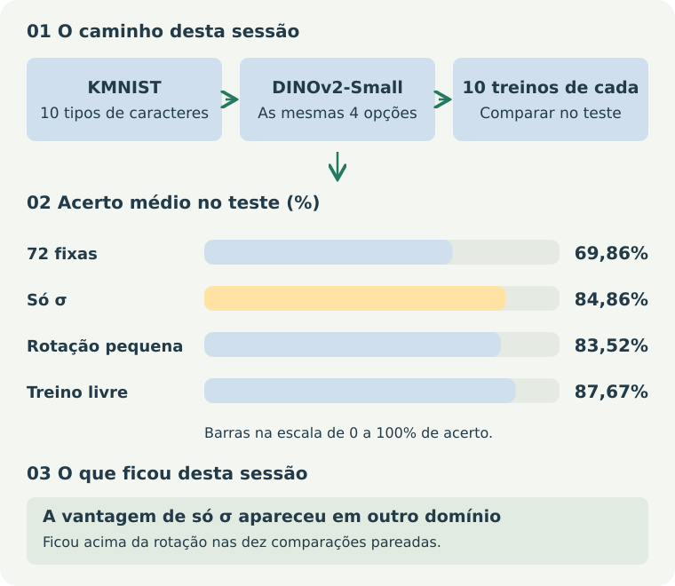
Repetir o teste com um modelo maior
Problema. Os testes usavam o Small. Eu precisava verificar se aumentar o modelo mudava o resultado e a economia de memória.
Método. Troquei o Small pelo DINOv2-Base, com cerca de 87 milhões de pesos, e repeti as quatro variantes em pele. Também medi tempo e memória na mesma placa.
Resultados. Só σ chegou a 74,49%, contra 75,35% do treino livre, recuperando 92% do ganho. Superou até o treino livre do Small, de 72,84%. No Base, reduziu o pico de memória em 13,7%, com tempo por passo praticamente igual.
Pergunta em aberto. Quando a tarefa exige pouca adaptação, ainda vale mais ajustar σ do que girar direções?
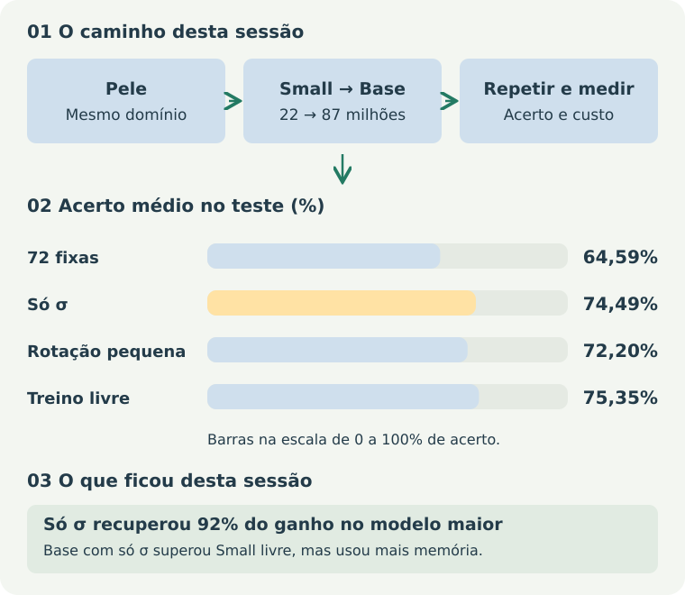
Testar uma tarefa com pouco ganho de adaptação
Problema. Só σ tinha vencido em pele e caracteres, onde liberar as 72 matrizes trouxe ganhos grandes. Eu queria saber se essa vantagem continuava quando o corpo quase não precisava mudar.
Método. Escolhi o DTD, com 47 tipos de texturas, por um motivo: um piloto anterior, na sessão 12, já indicava que liberar o corpo traria só cerca de 3 pontos de ganho. Eu queria comparar esse caso com pele e caracteres, onde os ganhos tinham sido de 12,5 e 17,8 pontos. Mantive o DINOv2-Small e treinei as quatro variantes dez vezes cada.
Resultados. Nos dez treinos finais, as 72 matrizes fixas deram 78,27% de acerto e o treino livre, 81,30%: ganho de 3,03 pontos. Só σ chegou a 80,57%; a rotação pequena, a 80,85%. A rotação ficou 0,28 ponto à frente em média e venceu em oito dos dez treinos.
Pergunta em aberto. Será que um ganho pequeno de adaptação favorece a rotação? Preciso de outro caso para conferir.
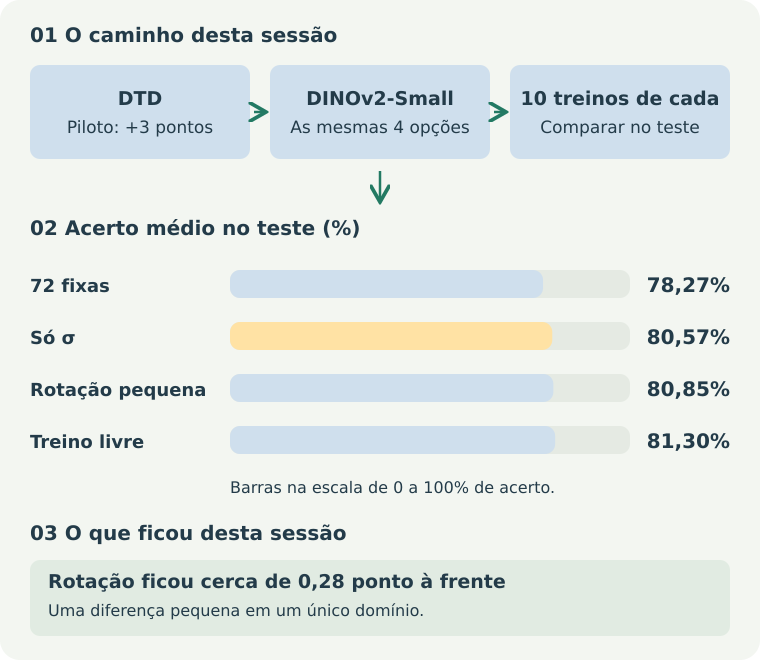
Conferir a hipótese com imagens de satélite
Problema. Em texturas, a rotação venceu por pouco. Eu queria testar se isso se repetia em outra tarefa com ganho pequeno de adaptação.
Método. Usei o EuroSAT, com dez classes de imagens de satélite. Repeti as quatro variantes no Small e comparei os resultados com os de texturas.
Resultados. O ganho do treino livre foi de 3,06 pontos, parecido com o DTD. Mas agora só σ chegou a 98,00% e a rotação a 97,78%. A ordem se inverteu: ganho pequeno, sozinho, não explicou qual variante ficou à frente.
Pergunta em aberto. Depois dessas mudanças de conclusão, o que permanece sustentado pelo conjunto dos testes?
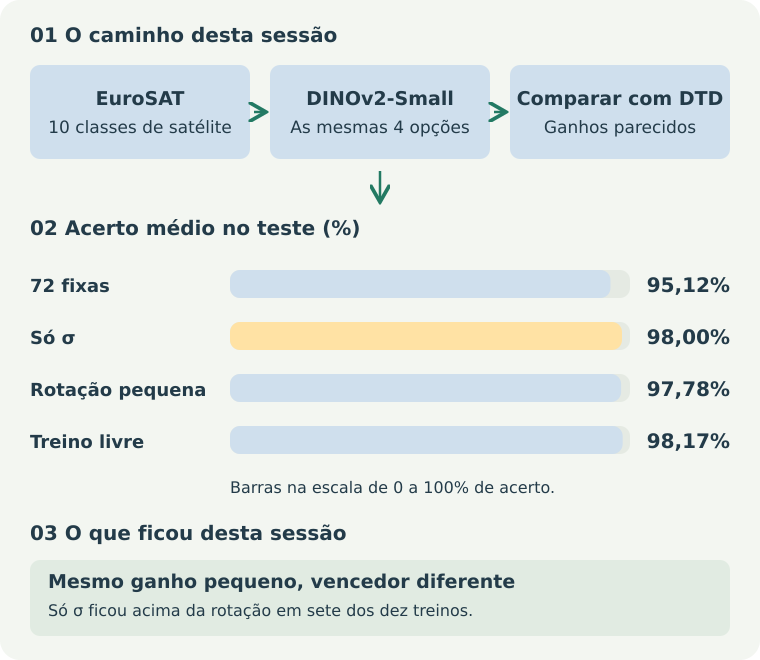
O que a pesquisa pode afirmar até aqui
Este balanço reúne cinco pares de modelo e tarefa: quatro no DINOv2-Small e um no Base. Não houve novos treinos nesta sessão; um programa conferiu os resultados já salvos.
Afirmações que podemos fazer
- Treinar só σ funciona nos cinco pares. Recuperou de 76,0% a 94,4% do ganho obtido ao liberar as 72 matrizes. O treino livre ainda ficou de 0,17 a 2,81 pontos de acerto acima.
- É uma boa escolha entre as duas restrições testadas. A rotação pequena usa 1,5 vez mais parâmetros nas 72 matrizes. Só σ nunca perdeu dela por mais de 0,28 ponto e venceu por 1,34 a 2,30 pontos nos três pares com maior ganho.
- As restrições foram cumpridas. Em só σ, as direções originais ficaram preservadas; na rotação, os σ quase não mudaram. A cabeça e os outros pesos do corpo também treinaram nas duas variantes.
- A pegada do treino livre não mede a capacidade de σ. O treino livre quase não alterou esses valores, mas σ sozinho carregou grande parte do ganho. A triagem com o corpo congelado também não permitiu prever o ganho.
Hipóteses que caíram
- “σ importa pouco porque muda pouco no treino livre.” Os treinos só σ das sessões 13 a 21 mostraram o contrário.
- “Direções mudam 87 vezes mais, logo carregam o aprendizado.” Uma mudança aleatória também produziu uma razão alta; a medida não separava aprendizado de movimento.
- “Rotação é melhor que σ.” Sua vantagem inicial veio com 23 vezes mais parâmetros. Com uma rotação menor e um passo melhor para σ, a ordem se inverteu em pele.
- “Ganho pequeno favorece a rotação.” No DTD ela ficou ligeiramente à frente; no EuroSAT, com ganho total quase igual, só σ ficou à frente.
Ganhos reais do framework de adaptação
Menos armazenamento por tarefa. Se o modelo original for compartilhado, podemos guardar apenas a atualização de cada tarefa. Os ajustes de σ ocupam 129 KB no Small ou 237 KB no Base. Como a cabeça e o restante do corpo também foram treinados, a atualização completa ocupa cerca de 3,4 MB no Small e 6,6 MB no Base, contra 84,2 MB e 330,3 MB ao guardar uma cópia inteira do modelo por tarefa.
Menos memória durante o treino. A tabela mostra o que mudou ao trocar o treino livre pelo treino só σ. “Memória de apoio” é a parte usada pelos gradientes e pelo otimizador; o pico na GPU inclui também os cálculos das fotos.
| Medida | Modelo | Treino livre | Só σ | Resultado |
|---|---|---|---|---|
| Memória de apoio | Small | 252,4 MB | 9,8 MB | 26 vezes menos |
| Base | 990,9 MB | 19,5 MB | 51 vezes menos | |
| Pico na GPU | Small | 2.056 MB | 1.894 MB | 7,8% menos |
| Base | 4.841 MB | 4.177 MB | 13,7% menos | |
| Tempo por passo | Small | 0,1225 s | 0,1229 s | Praticamente igual |
| Base | 0,3009 s | 0,3042 s | Praticamente igual |
Preço em acerto. O treino livre ficou de 0,17 a 2,81 pontos acima de só σ. A vantagem prática é economizar memória e disco aceitando essa perda nos casos testados; não houve ganho de velocidade.
As medidas de GPU foram feitas em pele, numa RTX 3060, com lotes de 32 fotos. O pico informado não inclui a memória das fotos pré-carregadas. O uso de uma placa menor ainda precisa ser testado. Os cinco pares não incluem outros métodos de adaptação.
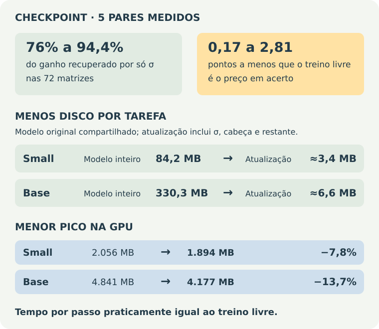